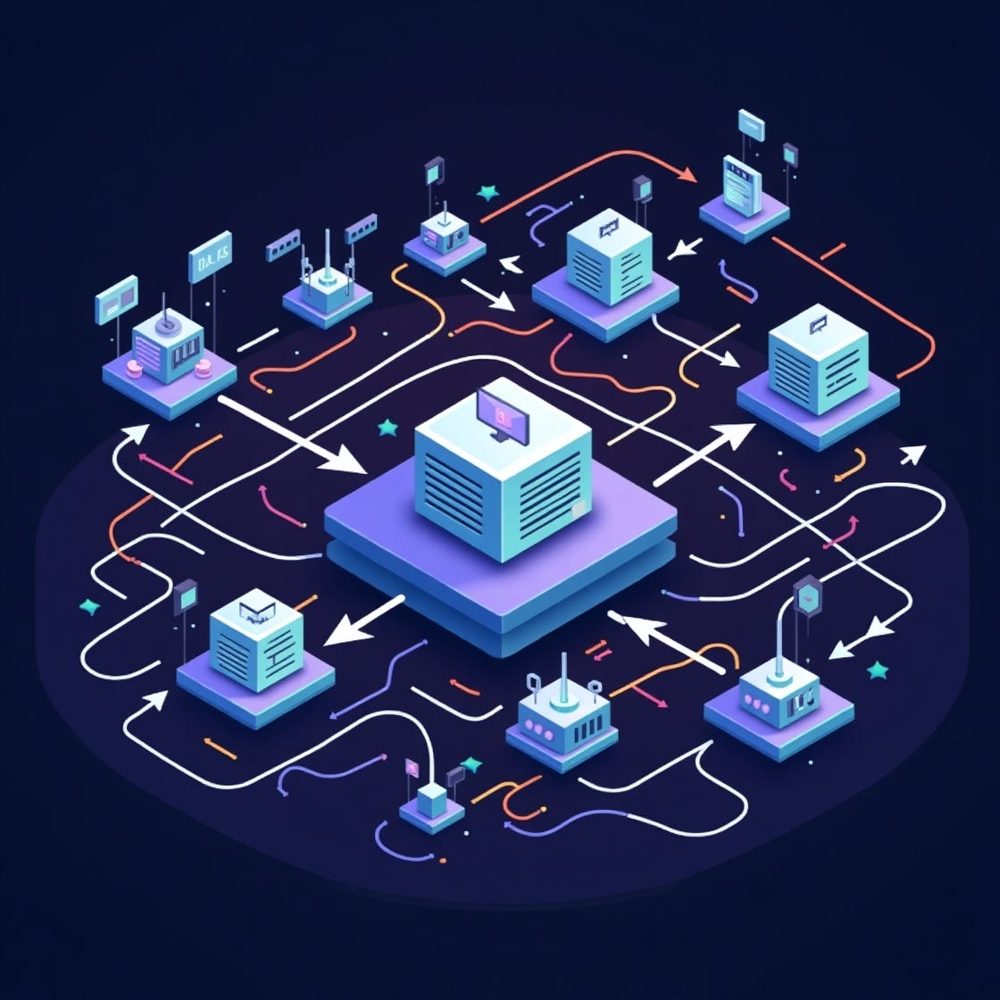

The journey from simple message queues to sophisticated streaming platforms represents one of the most significant architectural shifts in distributed systems. This evolution started back in the 1980s and 1990s when the first commercial message queue systems entered the market (IBM MQSeries, TIBCO Rendezvous, Microsoft Message Queuing, etc.). It’s really the story of how our industry transformed from those tightly-coupled monolithic systems to today’s globally distributed, event-driven architectures that process trillions of messages daily. And honestly, modern architectures are pushing way beyond traditional broker paradigms entirely.
The Enterprise Integration Crisis That Started It All
Back in the early 2000s, enterprises were dealing with a pretty fundamental challenge: their monolithic systems were becoming serious bottlenecks as businesses scaled up. Traditional point-to-point integration created this tangled web of custom code that was brittle, hard to maintain, and basically impossible to monitor effectively. When Service-Oriented Architecture (SOA) started gaining traction, it demanded reliable messaging middleware to connect all these disparate services, but the existing solutions like IBM MQSeries were proprietary and frankly, expensive as hell.
This crisis ended up sparking a revolution in open-source messaging. The term “Enterprise Service Bus” emerged around 2002, which established a conceptual framework for centralized integration architectures. But it was really the arrival of Apache ActiveMQ in 2004 and RabbitMQ in 2006 that democratized enterprise messaging — each taking a fundamentally different approach to solving this integration puzzle.
Traditional Message Brokers: The Foundation
Apache ActiveMQ: Java’s Answer to Enterprise Messaging
ActiveMQ emerged as the first major open-source Java Message Service (JMS) implementation, bringing enterprise-grade messaging to the masses. Its hub-and-spoke broker architecture was built on Java with minimal dependencies, providing a protocol-agnostic core that could speak multiple languages: OpenWire for binary efficiency, STOMP for simplicity, and later AMQP for standardization.
The real innovation came with ActiveMQ’s Network of Brokers concept. Unlike traditional single-broker systems, ActiveMQ allowed multiple brokers to form a network, forwarding messages based on consumer demand. This horizontal scaling approach, combined with pluggable storage options (KahaDB for performance, JDBC for enterprise integration), made it possible to build these massive distributed systems.
KahaDB, the default storage engine, used a custom B-Tree implementation with write-ahead logging for optimal disk performance. While it could experience read/write stalls during garbage collection (which was annoying), it provided the durability that enterprises required. The system could process hundreds of thousands of messages per second — which was pretty revolutionary for its time.
RabbitMQ: The Erlang Revolution
While ActiveMQ focused on Java ecosystems, RabbitMQ took a radically different approach. Built on Erlang/OTP — a platform that was designed for telecommunications systems requiring 99.999% uptime — RabbitMQ brought rock-solid reliability to messaging.
RabbitMQ’s implementation of AMQP 0–9–1 introduced a programmable protocol where applications could define their own routing topologies. The exchange-binding-queue model offered unprecedented flexibility:
- Direct exchanges for precise routing based on exact key matches
- Topic exchanges with wildcard pattern matching for publish/subscribe scenarios
- Fanout exchanges for efficient broadcasting
- Headers exchanges for complex content-based routing
The Erlang foundation provided massive concurrency through lightweight processes (each queue and exchange ran as an independent process) and built-in fault tolerance through supervisor hierarchies. When processes crashed, supervisors would restart them automatically — embodying the “let it crash” philosophy that made Erlang famous. It’s actually a pretty elegant approach when you think about it.
The Streaming Revolution: From Queues to Logs
Everything changed in 2011 when LinkedIn open-sourced Apache Kafka. Born from their need to handle billions of events daily, Kafka introduced a paradigm shift: the log as the fundamental abstraction.
The Log-Structured Innovation
Traditional message queues treated messages as ephemeral — consume and delete. Kafka treated them as immutable log entries that could be replayed indefinitely. This simple change had some pretty profound implications:
Sequential I/O optimization meant Kafka could achieve throughput approaching theoretical disk limits. Each partition was basically just a directory of segment files, written sequentially and read efficiently using memory-mapped files and zero-copy transfers via the sendfile() system call.
Consumer-controlled position allowed multiple consumer groups to read the same data at different speeds. Unlike queues where messages disappeared after consumption, Kafka’s offset-based consumption model enabled new use cases like event sourcing, change data capture, and stream processing.
From ZooKeeper to KRaft
Kafka’s original architecture relied on Apache ZooKeeper for coordination, but this created operational complexity and scalability bottlenecks (you hit a practical limit of around 200,000 partitions). The introduction of KRaft (Kafka Raft) consensus protocol in recent versions eliminates this dependency entirely.
KRaft uses an event-sourced architecture where all metadata changes are stored as events in a special __cluster_metadata topic. This self-contained approach provides faster recovery (controllers maintain state in memory), improved scalability, and reduced operational complexity – basically a lesson learned from years of production experience.
Exactly-Once Semantics: The Holy Grail
Kafka’s journey toward exactly-once semantics really illustrates the platform’s evolution. Starting with at-least-once delivery in early versions, Kafka 0.11 introduced idempotent producers using sequence numbers and producer IDs. The addition of transactions enabled exactly-once processing across multiple partitions — a feature that became default in Kafka 3.0.
This progression from “messages might be lost or duplicated” to “every message is processed exactly once” represents a fundamental shift in what developers could expect from messaging infrastructure. Pretty significant when you think about it.
Beyond Traditional Brokers: Modern Architectural Patterns
As messaging requirements evolved beyond traditional pub/sub patterns, new categories of solutions emerged, each optimizing for specific use cases.
Embedded and Brokerless Messaging
The overhead of centralized brokers led to a revolution in embedded messaging, where applications communicate directly without infrastructure.
ZeroMQ pioneered the brokerless messaging paradigm, implementing a truly decentralized architecture where applications communicate directly without a central message broker. This design eliminates the broker as both a bottleneck and single point of failure, reducing typical message latency from 12 network hops to just 3. Performance benchmarks show throughput exceeding 5 million messages per second for small messages, with latencies as low as 15–30 microseconds. Which is frankly pretty impressive.
NanoMsg, created by ZeroMQ’s original architect, addressed several architectural limitations with thread safety at the socket level and formal “scalability protocols” as building blocks for distributed systems. The SURVEY pattern, unique to NanoMsg, enables broadcast queries with responses from all participants — a capability that was missing in ZeroMQ.
Chronicle Queue targets ultra-low latency messaging for Java applications that require persistence. Built on memory-mapped files with off-heap storage, it achieves sub-microsecond latencies for local IPC while maintaining a complete audit trail. The framework processes over 1 million events per second per thread with 99th percentile latencies under 1 microsecond, making it the go-to choice for high-frequency trading systems.
In-Memory Data Grids: Unifying Messaging and Computation
A revolutionary approach emerged with in-memory data grids that combine distributed computing, data storage, and messaging in unified platforms.
Hazelcast achieves sub-10ms processing latencies while handling over 10 million events per second on a single node. The platform’s streaming capabilities leverage an in-memory architecture that eliminates disk I/O bottlenecks entirely, using techniques like the StripedExecutor for consistent event ordering and partition-based routing for global message sequencing. Pretty neat stuff when you need that kind of performance.
Apache Ignite takes a different approach with its continuous queries functionality, providing event-driven data monitoring with exactly-once delivery guarantees. Organizations leverage Ignite’s compute grid integration to co-locate computation with data, achieving optimal performance by minimizing network hops between messaging and processing layers.
GridGain extends Apache Ignite with enterprise features that are crucial for mission-critical deployments, adding advanced security with LDAP, Kerberos, and OAuth2 integration, multi-data center replication for global deployments, and comprehensive audit trails for regulatory compliance.
These platforms excel for financial trading systems requiring microsecond latencies, real-time fraud detection needing immediate access to historical context, and IoT edge processing that demands local computation.
The Cloud-Native Transformation
As enterprises moved to the cloud, a new generation of messaging services emerged, designed for the serverless era.
Amazon’s Messaging Trinity
Amazon Web Services introduced a complementary set of messaging services, each addressing different patterns:
SQS (2007) pioneered cloud-native queuing with nearly unlimited throughput and automatic scaling. Its visibility timeout mechanism and dead letter queues provided reliable message processing without infrastructure management. FIFO queues, which were added later, brought strict ordering and exactly-once processing to cloud messaging.
SNS enabled pub/sub patterns with massive fan-out capabilities — up to 12.5 million subscribers per topic. Message filtering (both attribute and payload-based) allowed sophisticated routing without downstream processing overhead.
Kinesis (2013) brought real-time streaming to AWS, with its shard-based architecture providing predictable throughput (1 MB/sec write, 2 MB/sec read per shard). While similar to Kafka conceptually, Kinesis’s fully-managed nature and tight AWS integration made it attractive for cloud-native applications.
EventBridge represents the evolution toward event-driven architectures, with sophisticated pattern matching, 130+ SaaS integrations, and a schema registry for discovering event structures. Its rule-based routing can target 40+ AWS services, enabling complex event flows without writing code.
The Serverless Advantage
These cloud services share common characteristics that differentiate them from traditional brokers:
- Zero infrastructure management — no servers to patch or scale
- Pay-per-use pricing — no idle capacity costs
- Automatic scaling — handle traffic spikes without intervention
- Built-in integrations — native connections to cloud services
Of course, this operational simplicity comes with trade-offs: less control, vendor lock-in, and potentially higher costs at scale. But for many organizations, the reduced operational burden outweighs these concerns.
Modern Streaming Platforms: Beyond Kafka
The success of Kafka inspired a new generation of platforms, each addressing specific limitations.
Apache Pulsar: Multi-Layered Architecture
Pulsar’s revolutionary separation of compute and storage layers addresses Kafka’s monolithic broker limitations. Brokers become stateless, handling only message routing, while Apache BookKeeper provides distributed storage with segment-based replication.
This architecture enables:
- Instant scaling without data rebalancing
- Native multi-tenancy with infrastructure-level isolation
- Built-in geo-replication across regions
- Tiered storage with automatic offloading to object storage
The price? Additional operational complexity from managing brokers, bookies, and ZooKeeper. Twitter’s experience migrating from a BookKeeper-based system to Kafka highlights this trade-off — sometimes simpler really is better.
NATS: Simplicity at Scale
NATS takes the opposite approach: radical simplicity. Its lightweight protocol (messages are simple text commands) and minimal overhead (20MB binary) enable deployment from Raspberry Pi to cloud clusters. NATS’s text-based protocol achieves sub-millisecond latencies through careful design, while its subject-based routing with hierarchical topics and wildcards provides sufficient flexibility for most pub/sub scenarios.
JetStream, NATS’s persistence layer, adds streaming capabilities while maintaining simplicity:
- Stream abstraction for durable storage with configurable retention
- Consumer abstraction for flexible consumption patterns
- Built-in deduplication and exactly-once delivery
- Key-value and object stores built on the streaming layer
Performance benchmarks show 59–87% cost savings compared to cloud services like Kinesis, with consistently lower latency. Not bad for such a simple approach.
Unified Stream Processing Platforms
The convergence of messaging and stream processing platforms indicates a broader trend toward unified data processing architectures where the distinction between message transport and computation blurs.
Apache Storm: True Streaming Pioneer
Apache Storm established the foundation for distributed stream processing with its true streaming architecture processing records one-by-one as they arrive. The platform’s topology concept — directed acyclic graphs of spouts and bolts — provides an intuitive programming model. Storm achieves sub-10ms latencies through its fail-fast, stateless design where all cluster state resides in ZooKeeper.
Apache Samza: Stateful Stream Processing
Apache Samza takes a fundamentally different approach, building on a three-layer architecture leveraging Kafka for streaming and YARN for execution. This design enables superior state management capabilities, with each task maintaining local RocksDB stores that can handle gigabytes of state per partition. LinkedIn actually uses Samza to process 2 trillion messages daily, which is pretty mind-boggling when you think about it.
Kafka Streams: Library-Based Processing
Kafka Streams revolutionized stream processing by eliminating the need for separate processing clusters entirely. As a library embedded directly in applications, it simplifies deployment to standard Java application patterns while maintaining Kafka’s exactly-once processing guarantees. Its integration with the broader Kafka ecosystem makes it the natural choice for organizations already invested in Kafka.
Apache Beam: Unified Batch and Stream
Apache Beam addresses a different challenge: providing a unified programming model for both batch and streaming data. The same pipeline code can execute on multiple runners including Google Cloud Dataflow, Apache Flink, and Apache Spark, providing unprecedented portability. Which is actually pretty useful in practice.
Apache Flink: Stream Processing Excellence
While message brokers move data, Flink processes it in motion. Its true streaming architecture with sophisticated state management enables complex event processing at scale. Flink’s checkpointing mechanism provides exactly-once processing through distributed snapshots without stopping data flow. It’s quite elegant really.
Specialized Solutions and Protocols
Purpose-Built Platforms
The messaging landscape continues to evolve with platforms targeting specific niches:
Redis Streams brings streaming to the Redis ecosystem with sub-millisecond latency. Its radix tree implementation provides efficient memory usage while supporting consumer groups and stream processing.
Redpanda eliminates Kafka’s JVM overhead by reimplementing the Kafka protocol in C++. Using a thread-per-core architecture, it achieves 10x lower latency at tail percentiles with 3–6x better hardware efficiency. Not a bad trade-off if you can handle the operational complexity.
EMQX handles 100 million concurrent connections per cluster for IoT deployments. Its masterless architecture and MQTT protocol optimization make it ideal for device communication.
Technical Foundations: The How Behind the What
Understanding these platforms requires grasping fundamental concepts that shape their design:
Delivery Guarantees: The Consistency Spectrum
At-most-once delivery (fire-and-forget) maximizes throughput but accepts message loss. At-least-once requires acknowledgments and retry logic, potentially creating duplicates. Exactly-once — the holy grail — demands careful coordination through idempotency, transactions, or application-level deduplication.
Each guarantee involves trade-offs. Kafka’s exactly-once implementation reduces throughput by 20–30% compared to at-least-once. The key insight: choose the weakest guarantee that actually satisfies your requirements. Don’t over-engineer if you don’t need to.
Consensus Algorithms: Agreement at Scale
Distributed systems require consensus for coordination. Raft (used by Kafka’s KRaft, NATS JetStream) simplifies consensus through leader election and log replication. ZooKeeper’s Zab protocol provides total order broadcast for strong consistency. These algorithms enable systems to maintain consistency despite failures, though obviously at the cost of increased latency and complexity.
Storage Architectures: Persistence Patterns
Log-structured storage (Kafka, Pulsar) optimizes for sequential writes and enables efficient replication. Memory-first designs (Redis, NATS, Hazelcast, Ignite) provide ultra-low latency with optional persistence. Pluggable storage (ActiveMQ) offers flexibility for different use cases. The recent trend toward tiered storage — automatically moving older data to cheaper object storage — enables cost-effective long-term retention. Which makes a lot of sense economically.
Partitioning Strategies: Scaling Horizontally
Effective partitioning enables parallel processing. Hash-based partitioning provides even distribution but suffers during repartitioning. Consistent hashing minimizes data movement when cluster membership changes. Dynamic assignment (Kafka’s consumer groups) automatically balances load across consumers. Pulsar’s segment-based approach eliminates repartitioning entirely — new brokers can immediately serve traffic.
Choosing the Right Platform: A Decision Framework
With numerous options available, selecting the right platform requires careful analysis based on specific architectural patterns:
For Ultra-Low Latency Requirements
In-memory grids (Hazelcast, Ignite) and embedded brokers (ZeroMQ, NanoMsg, Chronicle Queue) excel where co-locating messaging with computation eliminates network overhead. These solutions achieve microsecond to sub-microsecond latencies but do require careful capacity planning.
For Traditional Enterprise Messaging
RabbitMQ’s maturity, protocol support, and operational simplicity make it an excellent choice. Its exchange-binding model provides flexibility without overwhelming complexity. For Java-centric enterprises, ActiveMQ remains a viable option with its JMS support.
For Event Streaming and Log Aggregation
Kafka remains the gold standard. Its ecosystem maturity, extensive tooling, and battle-tested reliability justify its operational complexity for large-scale deployments. The Kafka protocol’s batch-oriented design achieves pretty much unmatched throughput for high-volume scenarios.
For Cloud-Native Applications
Managed services like AWS Kinesis or Google Pub/Sub eliminate operational overhead. The trade-off — vendor lock-in and potentially higher costs — is often acceptable for the simplicity you gain.
For Multi-Tenant or Geo-Distributed Systems
Pulsar’s architecture provides native support for these patterns, though with increased operational complexity. Its separation of compute and storage enables better resource utilization in multi-tenant environments. If you can handle the complexity, that is.
For IoT and Edge Computing
Lightweight solutions like NATS or MQTT brokers (Mosquitto, EMQX) provide the right balance of features and resource efficiency. MQTT’s protocol efficiency makes it ideal for bandwidth-constrained environments. Which is pretty common in IoT scenarios.
For Real-Time Analytics
Combining a streaming platform (Kafka/Pulsar) with a processing engine (Flink, Storm, Samza) enables sophisticated event processing at scale. Kafka Streams offers a simpler alternative if you’re already using Kafka.
For Unified Data Processing
Apache Beam provides portability across execution engines, while in-memory grids like Hazelcast and Ignite combine messaging with computation for scenarios that require immediate data access.
Looking Forward: The Future of Messaging
The evolution from message queues to streaming platforms reflects broader shifts in system architecture. As we look toward the future, several trends are emerging:
Convergence of paradigms — Traditional boundaries are blurring as queue systems add streaming capabilities and streaming platforms add queue semantics. Kafka 4.0’s “Queues for Kafka” feature exemplifies this convergence, while in-memory grids increasingly combine messaging, storage, and computation.
Specialized protocols proliferate — Rather than one-size-fits-all solutions, we’re seeing increasing specialization: MQTT dominates IoT, Kafka owns event streaming, NATS excels at microservice communication, and AMQP maintains its position in enterprise messaging.
Edge computing integration — Platforms are extending to edge deployments, enabling processing closer to data sources while maintaining centralized coordination. Embedded brokers and lightweight protocols become critical for edge scenarios.
Serverless messaging — The operational simplicity of cloud services drives adoption, pushing traditional platforms to simplify deployment and management while maintaining flexibility.
AI/ML integration — Native support for machine learning workflows, from feature computation to model serving, is becoming table stakes. Stream processing platforms increasingly integrate with ML frameworks.
The journey from heavyweight enterprise messaging systems to today’s global-scale streaming platforms illustrates how infrastructure evolution enables new application patterns. What started as simple message passing between services has become the foundation for real-time, event-driven architectures powering everything from financial trading to IoT analytics.
The key lesson from this evolution? There’s no universal solution. Each platform makes specific trade-offs between simplicity and features, consistency and performance, operational complexity and flexibility. Understanding these trade-offs — and how they map to your specific requirements — remains the key to building successful distributed systems.
As we enter 2025, the message broker landscape is more diverse and capable than ever. Whether you need simple queuing, massive-scale streaming, embedded ultra-low latency messaging, or unified compute and messaging platforms, there’s probably a solution designed for your use case. The challenge isn’t finding a solution anymore — it’s choosing the right combination of technologies that actually work together to solve your specific architectural challenges.